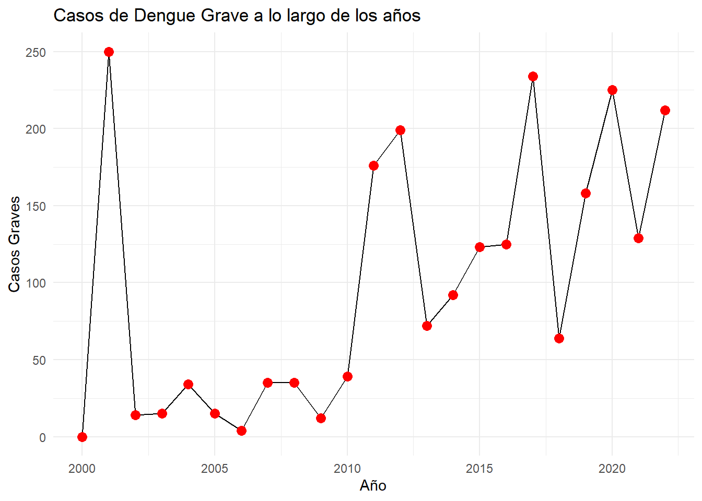

Descargar los datos
library(rio)
data=import("https://github.com/krlos20203563/ASIE_2024-1/raw/main/data_TA1/datos_abiertos_vigilancia_dengue.csv")Ahora procederemos a explorar los estadísticos descriptivos
summary(data$edad)## Min. 1st Qu. Median Mean 3rd Qu. Max.
## 0.00 15.00 26.00 28.97 41.00 106.00También inspeccionaré la estructura de los datos
str(data)## 'data.frame': 501680 obs. of 7 variables:
## $ departamento: chr "SAN MARTIN" "CUSCO" "ICA" "LORETO" ...
## $ provincia : chr "RIOJA" "LA CONVENCION" "ICA" "MAYNAS" ...
## $ distrito : chr "PARDO MIGUEL" "SANTA ANA" "PARCONA" "IQUITOS" ...
## $ enfermedad : chr "DENGUE SIN SEÑALES DE ALARMA" "DENGUE SIN SEÑALES DE ALARMA" "DENGUE SIN SEÑALES DE ALARMA" "DENGUE SIN SEÑALES DE ALARMA" ...
## $ year : int 2022 2021 2020 2021 2021 2022 2020 2022 2017 2017 ...
## $ ubigeo : int 220805 80901 110106 160101 250101 200401 160101 200105 200104 130702 ...
## $ edad : int 106 105 104 104 103 103 102 101 100 100 ...library(dplyr)##
## Adjuntando el paquete: 'dplyr'## The following objects are masked from 'package:stats':
##
## filter, lag## The following objects are masked from 'package:base':
##
## intersect, setdiff, setequal, uniontable(data$enfermedad)##
## DENGUE CON SEÑALES DE ALARMA
## 8 55058
## DENGUE GRAVE DENGUE SIN SEÑALES DE ALARMA
## 2262 444352data$enfermedad <- gsub("DENGUE CON SEÑALES DE ALARMA", "con", data$enfermedad)
data$enfermedad <- gsub("DENGUE SIN SEÑALES DE ALARMA", "sin", data$enfermedad)
data$enfermedad <- gsub("DENGUE GRAVE", "grave", data$enfermedad)table(data$enfermedad)##
## con grave sin
## 8 55058 2262 444352data=filter(data, enfermedad=="con" | enfermedad=="sin" | enfermedad=="grave")
data$enfermedad=as.factor(data$enfermedad)table(data$enfermedad)##
## con grave sin
## 55058 2262 444352summary(data$edad)## Min. 1st Qu. Median Mean 3rd Qu. Max.
## 0.00 15.00 26.00 28.97 41.00 106.00Se procederá a verificar la edad promedio de los contagiados
Agruparé por las edades por año y calcularé un promedio de las edades por año
library(lsr)
EdadxYear = data |>
group_by(year) |>
summarise(media = mean(edad, na.rm=T))
EdadxYear## # A tibble: 23 × 2
## year media
## <int> <dbl>
## 1 2000 28.4
## 2 2001 28.9
## 3 2002 26.0
## 4 2003 28.6
## 5 2004 28.1
## 6 2005 26.3
## 7 2006 26.8
## 8 2007 28.0
## 9 2008 27.8
## 10 2009 29.6
## # ℹ 13 more rowslibrary(ggplot2)
library(ggthemes)
# Crear el gráfico de líneas
library(ggplot2)
ggplot(EdadxYear, aes(x = year, y = media)) +
geom_line(color = "blue", size = 1.5) +
geom_point(color = "red", size = 3) +
labs(title = "Edad promedio de personas contagiadas de dengue por año",
x = "Año",
y = "Edad") +
theme_economist() +
theme(legend.key.size = unit(1, "lines"), # Tamaño de la leyenda
plot.title = element_text(size = 10)) # Tamaño del título## Warning: Using `size` aesthetic for lines was deprecated in ggplot2 3.4.0.
## ℹ Please use `linewidth` instead.
## This warning is displayed once every 8 hours.
## Call `lifecycle::last_lifecycle_warnings()` to see where this warning was
## generated.Se responderá si la cantidad de casos varió a lo largo de los años y si varió según gravedad
pregunta3 <- data %>%
group_by(year) %>%
summarise(
total_casos = n(),
graves = sum(enfermedad == "grave"),
sin_señales = sum(enfermedad == "sin"),
con_señales = sum(enfermedad == "con")
) library(ggplot2)
library(ggthemes)
grafico_total <- ggplot(pregunta3, aes(x = year, y = total_casos)) +
geom_line(size=1) +
geom_point(color = "red", size = 3) +
labs(title = "Total de casos de Dengue a lo largo de los años",
x = "Año",
y = "Total de casos") +
theme_update()
grafico_con_alarma <- ggplot(pregunta3, aes(x = year, y = con_señales)) +
geom_line() +
geom_point(color = "red", size = 3) +
labs(title = "Casos de Dengue con Alarma a lo largo de los años",
x = "Año",
y = "Casos con Alarma") +
theme_stata()
grafico_sin_alarma <- ggplot(pregunta3, aes(x = year, y = sin_señales)) +
geom_line() +
geom_point(color = "red", size = 3) +
labs(title = "Casos de Dengue sin Alarma a lo largo de los años",
x = "Año",
y = "Casos sin Alarma") +
theme_test()
grafico_graves <- ggplot(pregunta3, aes(x = year, y = graves)) +
geom_line() +
geom_point(color = "red", size = 3) +
labs(title = "Casos de Dengue Grave a lo largo de los años",
x = "Año",
y = "Casos Graves") +
theme_minimal()
print(grafico_total)print(grafico_con_alarma)print(grafico_sin_alarma)print(grafico_graves)
Ahora se procederá a analizar qué provincias fueron más afectadas por contagios
pregunta4 <- data %>%
group_by(departamento, provincia, year) %>%
summarize(
con_alarma = sum(enfermedad == "con"),
sin_alarma = sum(enfermedad == "sin"),
graves = sum(enfermedad == "graves")
)## `summarise()` has grouped output by 'departamento', 'provincia'. You can
## override using the `.groups` argument.# Mostrar los primeros registros de la base de datos resumida
head(pregunta4)## # A tibble: 6 × 6
## # Groups: departamento, provincia [1]
## departamento provincia year con_alarma sin_alarma graves
## <chr> <chr> <int> <int> <int> <int>
## 1 AMAZONAS BAGUA 2000 0 280 0
## 2 AMAZONAS BAGUA 2001 0 420 0
## 3 AMAZONAS BAGUA 2002 0 20 0
## 4 AMAZONAS BAGUA 2003 0 83 0
## 5 AMAZONAS BAGUA 2004 0 126 0
## 6 AMAZONAS BAGUA 2005 0 51 0Ahora añadiré el total
pregunta4 <- pregunta4 %>%
mutate(total_contagios = con_alarma + sin_alarma + graves)
head(pregunta4)## # A tibble: 6 × 7
## # Groups: departamento, provincia [1]
## departamento provincia year con_alarma sin_alarma graves total_contagios
## <chr> <chr> <int> <int> <int> <int> <int>
## 1 AMAZONAS BAGUA 2000 0 280 0 280
## 2 AMAZONAS BAGUA 2001 0 420 0 420
## 3 AMAZONAS BAGUA 2002 0 20 0 20
## 4 AMAZONAS BAGUA 2003 0 83 0 83
## 5 AMAZONAS BAGUA 2004 0 126 0 126
## 6 AMAZONAS BAGUA 2005 0 51 0 51Data nueva completa ahora sí todo
provyear <- pregunta4 %>%
group_by(departamento, provincia) %>%
summarise(total_historico = sum(total_contagios))## `summarise()` has grouped output by 'departamento'. You can override using the
## `.groups` argument.summary(provyear$total_historico)## Min. 1st Qu. Median Mean 3rd Qu. Max.
## 1.0 10.5 1138.0 4499.2 3530.5 66674.0Puesto que el tercer cuartil es 3530, todos los datos que estén por encima se considerarán muy altos
provyear=filter(provyear, total_historico>3530)library(ggplot2)
# Crear el gráfico de puntos
puntos <- ggplot(provyear, aes(x = departamento, y = total_historico, label = provincia)) +
geom_point(color = "red", size = 3) +
geom_text(size = 1.9, vjust = -0.5) +
labs(title = "Provincias con mayor número de casos de dengue",
x = "Departamentos", y = "Total de casos") +
theme_solarized() +
theme(plot.title = element_text(hjust = 0.5),
plot.margin = unit(c(0.5, 0.5, 0.5, 0.5), "cm"),
axis.text.x = element_text(size = 4.5),
axis.text.y = element_text(size = 5),
axis.title.x = element_text(size = 10),
axis.title.y = element_text(size = 10))
puntosAhora bien, para analizar la relación primero haremos una suma de cada dato por departamento y después realizaremos un heatmap (primera vez que hago uno)
Vamos a explorar primero
table(data$departamento)##
## \\N AMAZONAS ANCASH AREQUIPA AYACUCHO
## 444 12017 7214 7 8889
## CAJAMARCA CALLAO CUSCO HUANUCO ICA
## 19409 26 10475 9046 21324
## JUNIN LA LIBERTAD LAMBAYEQUE LIMA LORETO
## 19199 24377 15618 4255 92496
## MADRE DE DIOS MOQUEGUA PASCO PIURA PUNO
## 30562 1 1963 126392 179
## SAN MARTIN TUMBES UCAYALI
## 26759 27313 43707Según lo registra la base de datos, solo se tiene información de 22 departamentos y NN
Procederemos a limpiar para después crear
pregunta5 <- data %>% filter_all(all_vars(. != "\\N"))
table(pregunta5$departamento)##
## AMAZONAS ANCASH AREQUIPA AYACUCHO CAJAMARCA
## 12017 7214 7 8889 19409
## CALLAO CUSCO HUANUCO ICA JUNIN
## 26 10475 9046 21324 19199
## LA LIBERTAD LAMBAYEQUE LIMA LORETO MADRE DE DIOS
## 24377 15618 4255 92496 30562
## MOQUEGUA PASCO PIURA PUNO SAN MARTIN
## 1 1963 126392 179 26759
## TUMBES UCAYALI
## 27313 43707Creacion de la data
pregunta5 <- pregunta5 %>%
group_by(departamento) %>%
summarise(
total_casos = n(),
graves = sum(enfermedad == "grave"),
sin_señales = sum(enfermedad == "sin"),
con_señales = sum(enfermedad == "con")
)
head(pregunta5)## # A tibble: 6 × 5
## departamento total_casos graves sin_señales con_señales
## <chr> <int> <int> <int> <int>
## 1 AMAZONAS 12017 39 11476 502
## 2 ANCASH 7214 19 6899 296
## 3 AREQUIPA 7 0 6 1
## 4 AYACUCHO 8889 20 8600 269
## 5 CAJAMARCA 19409 37 17503 1869
## 6 CALLAO 26 0 23 3La pregunta me pide analizar la relación entre casos alarmantes no graves y los asintomaticos. En ese sentido, en la base de datos significa que es la relación entre los “con” entre los “sin”
pregunta5 <- pregunta5 %>%
mutate(relacion = con_señales/sin_señales)
head(pregunta5)## # A tibble: 6 × 6
## departamento total_casos graves sin_señales con_señales relacion
## <chr> <int> <int> <int> <int> <dbl>
## 1 AMAZONAS 12017 39 11476 502 0.0437
## 2 ANCASH 7214 19 6899 296 0.0429
## 3 AREQUIPA 7 0 6 1 0.167
## 4 AYACUCHO 8889 20 8600 269 0.0313
## 5 CAJAMARCA 19409 37 17503 1869 0.107
## 6 CALLAO 26 0 23 3 0.130Ahora realizaré el heatmap
library(knitr)
library(heatmap3)
library(plotly)##
## Adjuntando el paquete: 'plotly'## The following object is masked from 'package:ggplot2':
##
## last_plot## The following object is masked from 'package:rio':
##
## export## The following object is masked from 'package:stats':
##
## filter## The following object is masked from 'package:graphics':
##
## layout# Preparar los datos para el heatmap
heatmap_data <- pregunta5 %>%
select(con_señales, sin_señales, relacion) %>%
as.matrix()
rownames(heatmap_data) <- pregunta5$departamentolibrary(d3heatmap)##
## ======================
## Welcome to d3heatmap version 0.9.0
##
## Type citation('d3heatmap') for how to cite the package.
## Type ?d3heatmap for the main documentation.
##
## The github page is: https://github.com/talgalili/d3heatmap/
## Please submit your suggestions and bug-reports at: https://github.com/talgalili/d3heatmap/issues
## You may ask questions at stackoverflow, use the r and d3heatmap tags:
## https://stackoverflow.com/questions/tagged/d3heatmap
## ======================##
## Adjuntando el paquete: 'd3heatmap'## The following objects are masked from 'package:base':
##
## print, saved3heatmap(heatmap_data, scale = "column", colors="Spectral",)## Warning in RColorBrewer::brewer.pal(n, pal): n too large, allowed maximum for palette RdYlBu is 11
## Returning the palette you asked for with that many colors
## Warning in RColorBrewer::brewer.pal(n, pal): n too large, allowed maximum for palette RdYlBu is 11
## Returning the palette you asked for with that many colors